A8 Math: The Long Version
Here, we'll give you the gory math details behind the "world according to you" in answer A8. You may wish to read the friendly explanation under A8 first.
Different probabilities of disaster
To create graph A8, we combined two kinds of disaster: nuclear, and "everything else". In any year, if:
P6: A nuclear war has happened, or:
P7: Some other disaster has happened, then:
A8: Some disaster has happened.
So to find A8, we need to find P6 and P7, then combine them.
Setting P6
P6 records whether a major nuclear war, big enough to seriously set back science worldwide, has taken place. At each year, it can say, "yes: nuclear war has happened", or: "no: nuclear war has not happened", with a probability attached to both.
In question Q7, you got to put in the distribution by setting a few parameters. We'll now explain how we translated this input into a probability that nuclear war has happened.
First, there's a random variable that we called the world's "disaster-proneness". We gave this a standard normal distribution: that is, a mean of 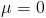 and a standard deviation of 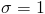. Once this is set, it's constant: that is, it does not depend on what year it is. So we assume that if the world is surprisingly prone to nuclear war in 2010, it will still be surprisingly prone to nuclear war in 2070. But if you expect nuclear war to be largely a solved problem by 2070 no matter what, then, of course, "surprisingly prone" will still translate to a small annual probability by then.
More concretely, you entered four parameters: a mean and s.d. at the starting year, 2010, and a mean and s.d. at the final year, 2070. As you can tell from the graph, we calculate a mean and s.d. (of the log) for each year by assuming they change linearly between the 2010 and 2070 values.
Now we combine the mean and s.d. with disaster-proneness: for example, if disaster-proneness is .5, the mean is 6, and the s.d. is 2, the outcome is 6 + .5*2 = 7.
We interpret this as (proportional to) the logarithm of the expected number of events per year, or the instantaneous rate at which events occur. (Doubling the rate at which events occur doubles the expected number per year; this is because we assume the events are independent. Realistically, a first nuclear war would reduce the rate at which nuclear wars occurred afterwards, but the model stops at the first nuclear war, so the independence assumption doesn't affect the model results.) And once we have an instantaneous rate, we can calculate an annual probability.
If the disaster-proneness is 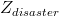, the formula for the instantaneous disaster rate 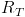 is:
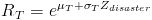, with 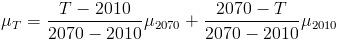 and 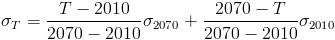.
In total, after accounting for "disaster-proneness", the disaster rate is distributed according to a lognormal distribution:
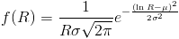.
(If you want to know why we used a lognormal distribution, read our FAQ entry.)
The probability that a disaster happens (or would have happened multiple times) in any year T follows from the (average) rate R over that year:
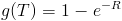
The probability that disaster has happened in a year T or earlier is:
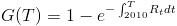
To find the total probability, before you know what the disaster-proneness is, average over all values of :
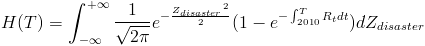
In sum:
- Whether a disaster has happened depends (randomly) on the disaster rate for all past times
- The past rate depends on the "disaster-proneness" and your input for the start and end distributions, with a single value for disaster-proneness determining all rates, so disaster rates are perfectly correlated across time
- Disaster-proneness is itself a random (standard normal) variable.
Setting P7
The math of how P7 was set is exactly the same as the math of how P6 was set; we just gave the result a different name and interpretation. All the nuclear disaster probabilities are independent of all the non-nuclear disaster probabilities.
Combining Both
We have the probability nuclear disaster happened, and the probability some other disaster happened. What we want is the probability that a nuclear or other disaster happened. Correcting for double-counting cases where both happen, we have:
Prob(A8: disaster happened) = Prob(P6: nuclear disaster happened) + Prob(P7: other disaster happened) - Prob(P6 and P7)
Conveniently enough, we're assuming both kinds of disaster are probabilistically independent. (Or we're pretending that the model ends when a disaster happens, which leads to the same answer). So the probability we're looking for in the last term is the product of the individual probabilities:
Prob(A8) = Prob(P6) + Prob(P7) - Prob(P6) * Prob(P7).
That's it! We now have a probability for A8 each year. This is what you see in the graph.
Return to your calculation